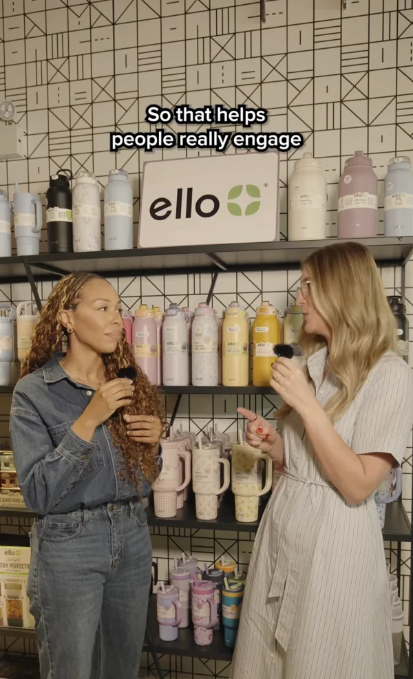
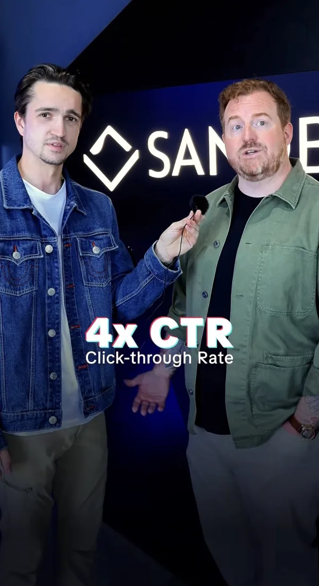
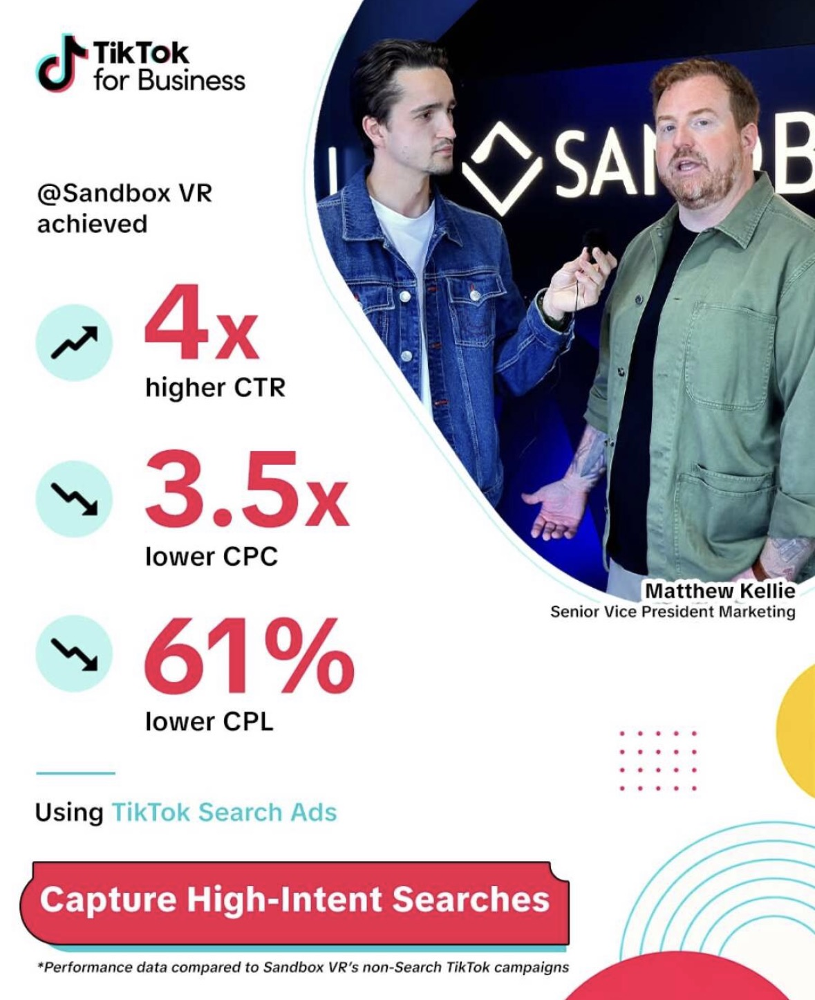

View ad on Instagram ↗
View ad on Instagram ↗
View ad on Instagram ↗TikTok
Growth Marketing Intern, SMB Product GrowthFeb–Aug 2026
- Led two customer case study campaigns end to end, from client selection to paid launch
- Supported 15+ global SMB ad launches across 40+ stakeholders
- Automated weekly performance reporting with internal AI tools
- Audited 5,000+ webpages; recommendations went live on TikTok’s advertiser sites
uc berkeley life · social media intern · mar 2024–present
the campus feed 🎬
I own short-form production end to end for UC Berkeley Life, from idea and script to filming and edit. These selections show my range across interviews, student advice, campus culture, and short-form storytelling.
How these numbers are counted
Metrics updated October 29, 2026; earlier counts captured October 9.
Campus culture
First Day of School Outfits
300K combined views ·
Open on Instagram : First Day of School Outfits (opens in a new tab) Open on TikTok ↗: First Day of School Outfits (opens in a new tab)Admissions storytelling
Why We Chose UC Berkeley
126K Instagram views ·
Open on Instagram : Why We Chose UC Berkeley (opens in a new tab)Student advice
First Year Fundamentals: Packing Smart
49K Instagram views ·
Open on Instagram : First Year Fundamentals: Packing Smart (opens in a new tab)Campus access
What’s Inside the Campanile?
44K Instagram views ·
Open on Instagram : What’s Inside the Campanile? (opens in a new tab)Campus dining
Qualcomm Café: A New Campus Bite
63K Instagram views ·
Open on Instagram : Qualcomm Café: A New Campus Bite (opens in a new tab)Student-life vlog
My Last First Week at UC Berkeley
32K Instagram views ·
Open on Instagram : My Last First Week at UC Berkeley (opens in a new tab)